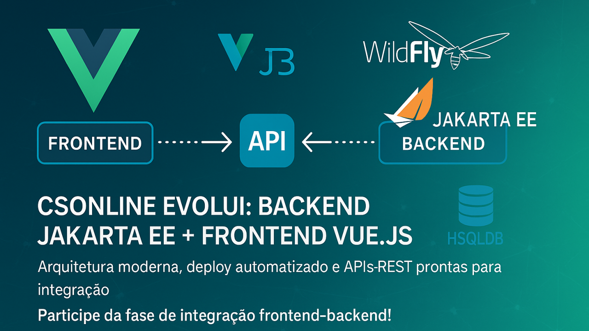

Acompanhe o progresso
Avanços contínuos no projeto

Desenvolvedor Java Sênior | Especialista em Back-end | Jakarta, Spring Boot, REST APIs, Docker | Engenheiro Químico
2 de agosto de 2025
Desde nosso último artigo, o CSOnline tem avançado rapidamente. O que começou como uma aplicação JSF legado agora está se transformando em uma arquitetura moderna e distribuída, com uma clara separação entre backend e frontend. Esta evolução reflete nosso compromisso com boas práticas de desenvolvimento e preparação para os desafios do mercado atual.
Backend: Solidez e Maturidade
Nosso backend Jakarta EE 10 está mais robusto do que nunca:
- Migração completa para Jakarta EE: Atualizamos todos os pacotes javax.* para jakarta.*, garantindo compatibilidade com os servidores de aplicação mais recentes
- Persistência aprimorada: Consolidamos o HSQLDB como nossa solução exclusiva de banco de dados, simplificando a configuração e implantação
- Inicialização de dados otimizada: Implementamos um DataInitializer com suporte a múltiplos scripts SQL, proporcionando uma experiência de desenvolvimento mais fluida
- Documentação extensiva: Swagger/OpenAPI completamente integrado, permitindo testes interativos de todas as APIs REST
- Flexibilidade de configuração: Suporte a ambientes com JTA (produção) e RESOURCE_LOCAL (desenvolvimento), documentados detalhadamente
Os endpoints REST agora estão 100% funcionais, com testes unitários abrangentes garantindo a confiabilidade de cada operação CRUD.
Frontend: A revolução em Vue.js
O grande destaque desta fase é nosso novo frontend SPA desenvolvido em Vue.js 3:
- Arquitetura Composition API: Utilizando o que há de mais moderno no ecossistema Vue
- Módulos independentes: Separação clara entre gestão de usuários, entregadores, empresas, entregas, equipes, SMS/WhatsApp e preços
- Interface responsiva: Design moderno que se adapta a qualquer dispositivo
- Vite como build tool: Garantindo carregamento rápido e otimizado
- Sistema completo de navegação: Fluxo intuitivo desde o login até o logout
O frontend já está 100% funcional com dados simulados, pronto para integração com os endpoints REST do backend. A experiência do usuário foi cuidadosamente elaborada para garantir produtividade e facilidade de uso.
Integração e Deploy
Desenvolvemos scripts PowerShell que automatizam todo o processo de build e deploy:
- Build integrado: Frontend e backend em um único comando
- Configuração do WildFly 31: Scripts para DataSource JDBC e HTTPS/SSL
- Documentação detalhada: Instruções passo a passo para desenvolvedores e usuários finais
Nossa documentação inclui diagramas de sequência, guias de configuração e tutoriais completos para quem deseja explorar ou contribuir com o projeto.
Próximos passos e oportunidades
Estamos prestes a iniciar a fase de integração entre o frontend Vue.js e o backend Jakarta EE. Esta é uma excelente oportunidade para:
- Desenvolvedores frontend: Contribuir com componentes Vue.js, ajustes de UX/UI e animações
- Especialistas em Jakarta EE: Refinar endpoints REST, otimizar queries e melhorar a segurança
- DevOps: Aprimorar pipelines de CI/CD e estratégias de deploy
- QA: Desenvolver testes automatizados E2E com Cypress ou similares
O CSOnline está se tornando não apenas um sistema de gestão de entregas, mas uma plataforma completa que demonstra as melhores práticas em desenvolvimento fullstack moderno.
Como participar
Se você se interessou por este projeto:
- Faça um fork do repositório: https://github.com/chmulato/csonline
- Explore a documentação em doc/INDEX.md
- Veja o sistema em funcionamento seguindo o guia no README.md
- Proponha melhorias através de Pull Requests ou discussões no Issues
Acreditamos que o desenvolvimento colaborativo gera não apenas software de melhor qualidade, mas também comunidades mais fortes e desenvolvedores mais experientes.
Acompanhe a evolução do CSOnline e faça parte desta jornada de transformação tecnológica!
#java #jakartaee #vuejs #spa #frontend #backend #fullstack #opensource #hsqldb #wildfly #devops #linkedin #devcommunity